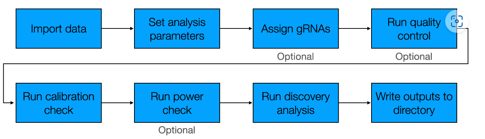
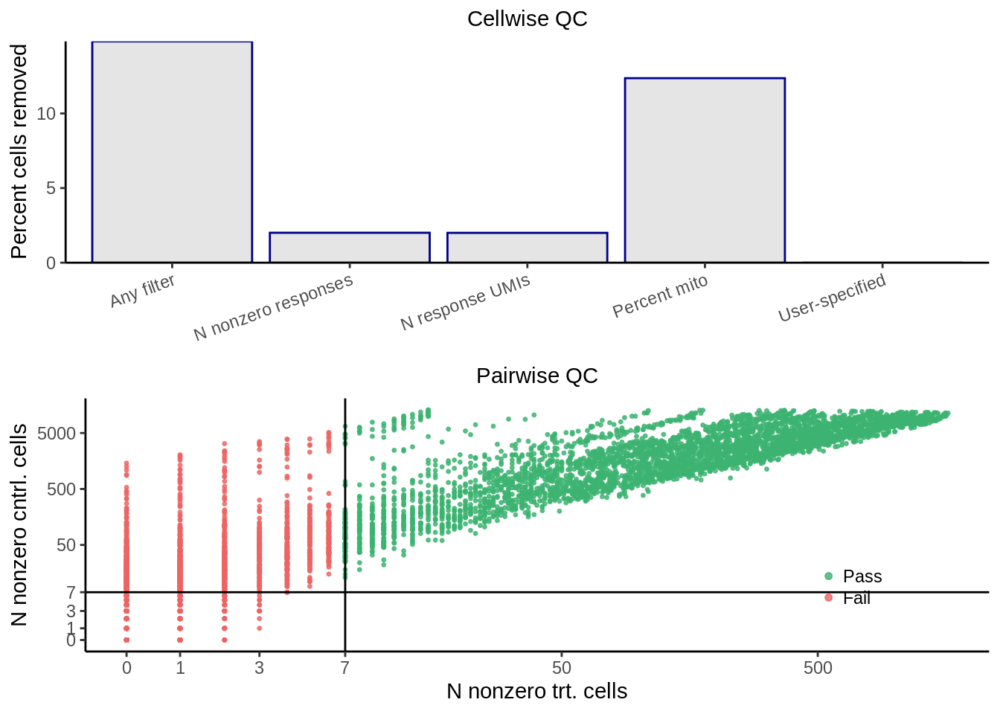
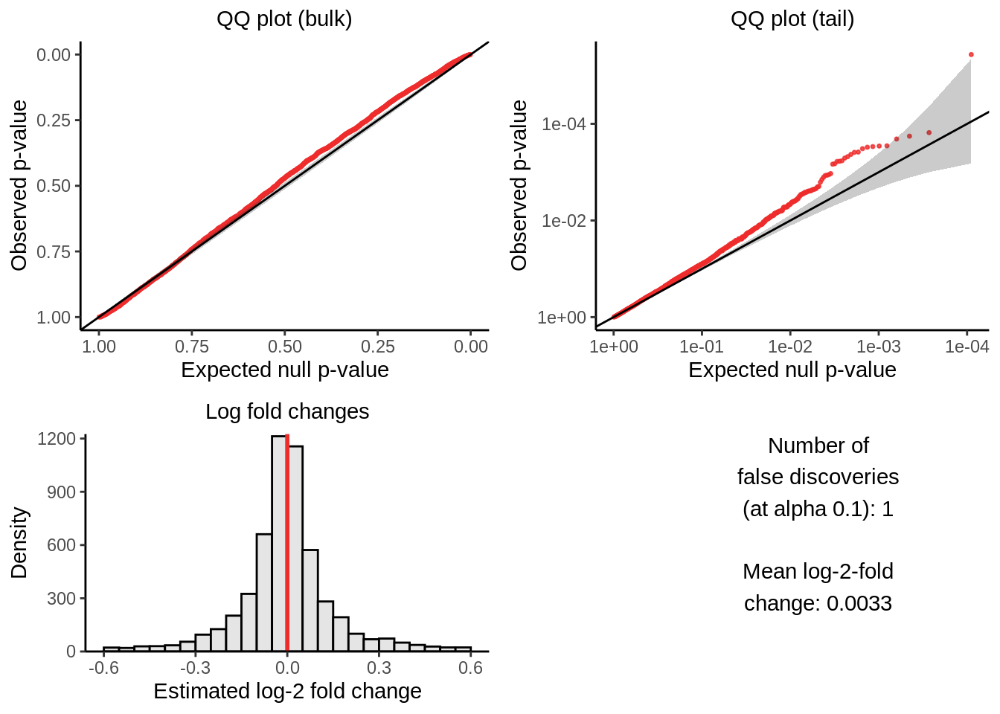
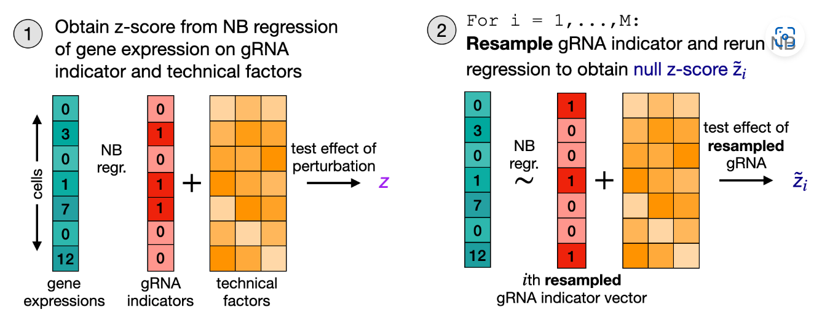
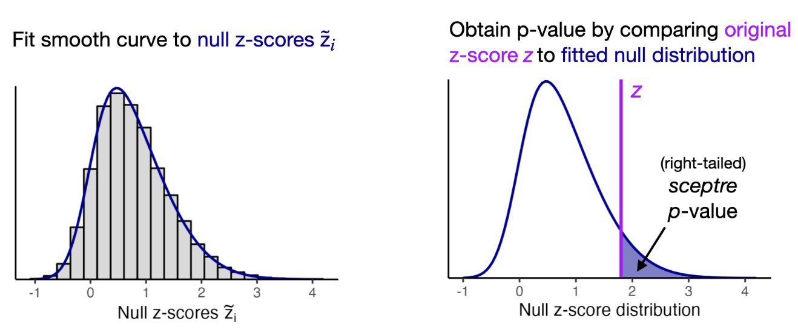
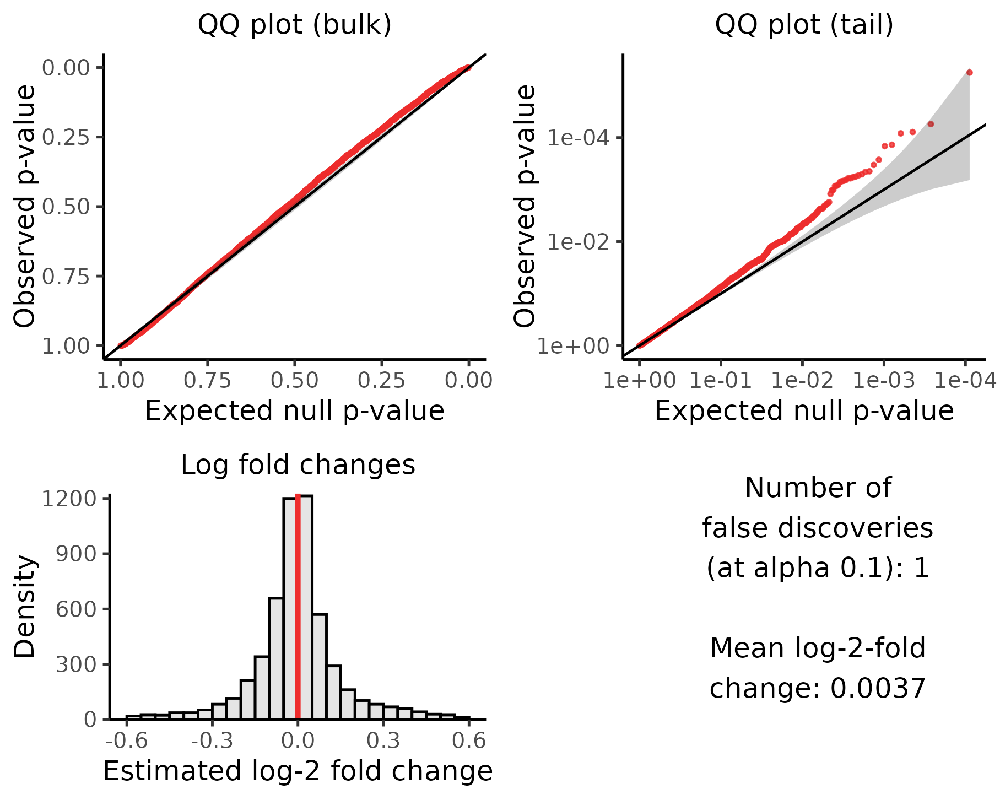
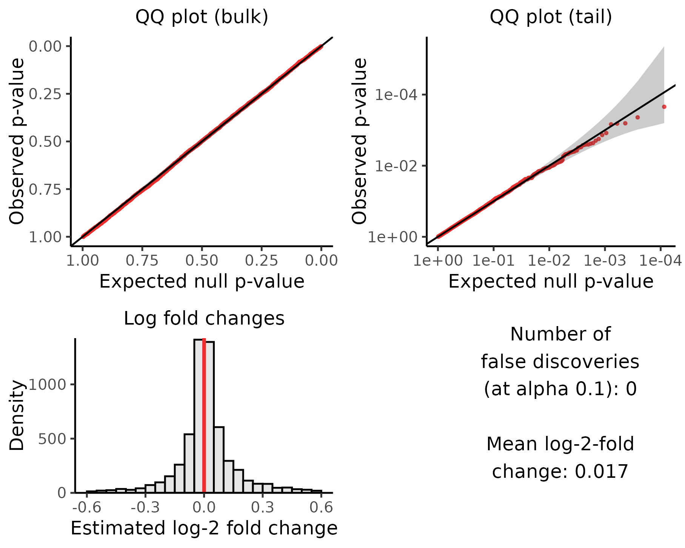
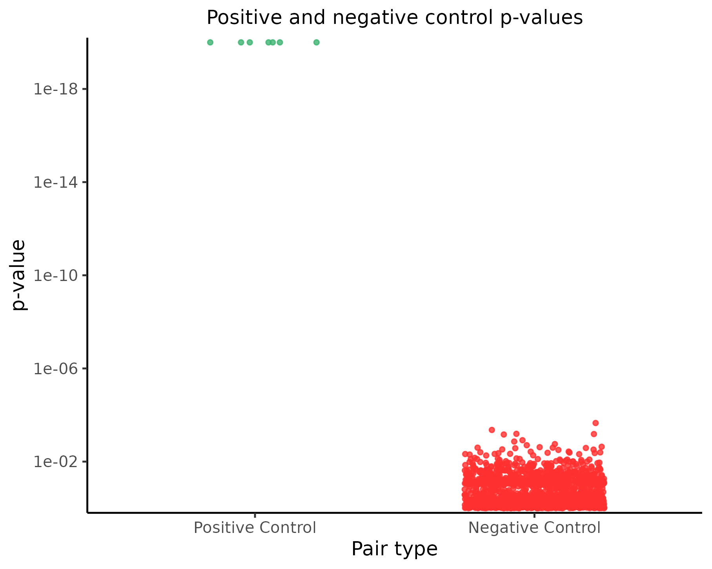

summary
jliucx
2024-07-12
Last updated: 2024-07-27
Checks: 7 0
Knit directory: Getting_started/
This reproducible R Markdown analysis was created with workflowr (version 1.7.1). The Checks tab describes the reproducibility checks that were applied when the results were created. The Past versions tab lists the development history.
Great! Since the R Markdown file has been committed to the Git repository, you know the exact version of the code that produced these results.
Great job! The global environment was empty. Objects defined in the global environment can affect the analysis in your R Markdown file in unknown ways. For reproduciblity it’s best to always run the code in an empty environment.
The command set.seed(20240712) was run prior to running
the code in the R Markdown file. Setting a seed ensures that any results
that rely on randomness, e.g. subsampling or permutations, are
reproducible.
Great job! Recording the operating system, R version, and package versions is critical for reproducibility.
Nice! There were no cached chunks for this analysis, so you can be confident that you successfully produced the results during this run.
Great job! Using relative paths to the files within your workflowr project makes it easier to run your code on other machines.
Great! You are using Git for version control. Tracking code development and connecting the code version to the results is critical for reproducibility.
The results in this page were generated with repository version 63af0fb. See the Past versions tab to see a history of the changes made to the R Markdown and HTML files.
Note that you need to be careful to ensure that all relevant files for
the analysis have been committed to Git prior to generating the results
(you can use wflow_publish or
wflow_git_commit). workflowr only checks the R Markdown
file, but you know if there are other scripts or data files that it
depends on. Below is the status of the Git repository when the results
were generated:
Ignored files:
Ignored: .Rhistory
Ignored: .Rproj.user/
Ignored: analysis/job-info.err
Ignored: analysis/job-info.out
Ignored: analysis/run_sceptre_example.sh
Untracked files:
Untracked: analysis/try_Knit.Rmd
Untracked: data/GDO_threshold/
Untracked: data/STINGseq-v1_GDO/
Untracked: data/STINGseq-v1_HTO/
Untracked: data/STINGseq-v1_cDNA/
Untracked: output/sceptre_outputs_cis/
Untracked: output/sceptre_outputs_cis_threshold/
Untracked: output/try_rcc/
Unstaged changes:
Modified: .gitignore
Modified: analysis/create_grna_target_data_frame.Rmd
Modified: analysis/sceptre.Rmd
Modified: analysis/sceptre_example.Rmd
Deleted: analysis/seurat_example.Rmd
Deleted: analysis/try_rcc.Rmd
Note that any generated files, e.g. HTML, png, CSS, etc., are not included in this status report because it is ok for generated content to have uncommitted changes.
These are the previous versions of the repository in which changes were
made to the R Markdown (analysis/summary.Rmd) and HTML
(docs/summary.html) files. If you’ve configured a remote
Git repository (see ?wflow_git_remote), click on the
hyperlinks in the table below to view the files as they were in that
past version.
| File | Version | Author | Date | Message |
|---|---|---|---|---|
| Rmd | 63af0fb | jliucx | 2024-07-27 | Add a function |
| html | 877c614 | jliucx | 2024-07-27 | Build site. |
| Rmd | 1587186 | jliucx | 2024-07-27 | add link to graphs |
| html | 0fdb13f | jliucx | 2024-07-26 | Build site. |
| Rmd | 3b868a1 | jliucx | 2024-07-26 | Summary |
library(sceptre)
library(sceptredata)
library(readr)directories <- "data/STINGseq-v1_GDO"
grna_target_data_frame <- data.frame(read_csv(paste0(directories,"/grna_target_data_frame.csv")))
── Column specification ────────────────────────────────────────────────────────
cols(
grna_id = col_character(),
grna_target = col_character(),
chr = col_character(),
start = col_double(),
end = col_double()
)sceptre_object <- import_data_from_cellranger(
directories = directories,
moi = "high",
grna_target_data_frame = grna_target_data_frame
)Processing directory 1. ✓
Combining matrices across directories. ✓
Creating the sceptre object. ✓sceptre_objectAn object of class sceptre_object.
Attributes of the data:
• 15215 cells
• 36601 responses
• High multiplicity-of-infection
• 198 targeting gRNAs (distributed across 95 targets)
• 12 non-targeting gRNAs
• 5 covariates (grna_n_nonzero, grna_n_umis, response_n_nonzero, response_n_umis, response_p_mito)Part1: Sceptre Workflow
The overall pipeline can be summarized as follows:

1. Import data
The first step is to import the data. Data can be imported
into sceptre from 10x Cell Ranger or Parse outputs, as well
as from R matrices. The simplest way to import the data is to
read the output of one or more calls to cellranger_count
into sceptre via the function import_data_from_cellranger().
The mapping document grna_target_data_frame should also
be passed to the import function. grna_target_data_frame is
a data frame mapping each individual gRNA to the genomic element that
the gRNA targets.
grna_target_data_frame[c(1:4,176:180,189:195),] grna_id grna_target chr start end
1 SNP-1_1 rs76708468 chr17 62206299 62206299
2 SNP-1_2 rs76708468 chr17 62206299 62206299
3 SNP-2_1 13:113875407_GC_G chr13 113875407 113875407
4 SNP-2_2 13:113875407_GC_G chr13 113875407 113875407
176 SNP-88_2 rs9943081 chr1 226538054 226538054
177 CD46-1 ENSG00000117335 chr1 207925383 207968861
178 CD46-2 ENSG00000117335 chr1 207925383 207968861
179 CD52-1 ENSG00000169442 chr1 26644449 26647014
180 CD52-2 ENSG00000169442 chr1 26644449 26647014
189 NTC-1 non-targeting <NA> NA NA
190 NTC-2 non-targeting <NA> NA NA
191 NTC-3 non-targeting <NA> NA NA
192 NTC-4 non-targeting <NA> NA NA
193 NTC-5 non-targeting <NA> NA NA
194 NTC-6 non-targeting <NA> NA NA
195 NTC-7 non-targeting <NA> NA NA2. Set analysis parameters
Positive control pairs
A positive control target-response pair is a target-response pair for which we know that there is a relationship between the target and the response. Positive control target-response pairs often are formed by coupling a transcription start site to the gene known to be regulated by that transcription start site.
positive_control_pairs <- construct_positive_control_pairs(sceptre_object)
positive_control_pairs grna_target response_id
1 ENSG00000117335 ENSG00000117335
2 ENSG00000169442 ENSG00000169442
3 ENSG00000109971 ENSG00000109971
4 ENSG00000109255 ENSG00000109255
5 ENSG00000196262 ENSG00000196262
6 ENSG00000116251 ENSG00000116251
7 ENSG00000196352 ENSG00000196352Negative control pairs
A negative control target-response pair is a target-response pair for which we know that there is not a relationship between the target and the response.
Discovery pairs
The functions construct_cis_pairs()
and construct_trans_pairs()
facilitate the construction of cis and trans discovery
sets, respectively. construct_cis_pairs()
takes as arguments a sceptre_object and an integer
distance_threshold and returns the set of response-target
pairs located on the same chromosome within
distance_threshold bases of one another.
discovery_pairs <- construct_cis_pairs(
sceptre_object = sceptre_object,
positive_control_pairs = positive_control_pairs,
response_position_data_frame=gene_position_data_frame_grch37,
distance_threshold = 5e6
)
head(discovery_pairs) grna_target response_id
1 rs76708468 ENSG00000182628
2 rs76708468 ENSG00000068489
3 rs76708468 ENSG00000265415
4 rs76708468 ENSG00000167447
5 rs76708468 ENSG00000153982
6 rs76708468 ENSG000001751553. Assign gRNA to cells
Mixture method
The mixture method is the default method for high-MOI screens and is an optional method for low-MOI screens. The method works as follows. First, we fit a latent variable Poisson GLM to the data, regressing the gRNA UMI count vector onto the (latent) gRNA indicator vector and cell-specific covariate matrix. (A given entry of the gRNA indicator vector is defined to be “1” if the gRNA is present in the corresponding cell and “0” otherwise.) We fit the latent variable Poisson GLM using a novel variant of the EM algorithm. The fitted model yields the probability that each cell contains the gRNA; we threshold these probabilities to assign the gRNA to cells.
The mixture method assigns gRNAs to cells using a latent variable generalized linear model (GLM). Consider a given gRNA \(i\). Let \(G_j\) be the UMI count of gRNA \(i\) in cell \(j\), and let \(X_j\) be the (unobserved) variable indicating whether gRNA \(i\) is present (\(X_j = 1\)) or absent (\(X_j = 0\)) in cell \(j\). (We suppress the \(i\) subscript for notational compactness.) We model the gRNA UMI counts using a latent variable Poisson GLM:
\[\begin{equation} \begin{aligned} G_j \mid \mu_j &\sim \text{Pois}(\mu_j) \\\log(\mu_j \mid X_j, Z_j) &= \gamma X_j + \beta^T Z_j \\X_j &\sim \text{Bernoulli}(\pi) \end{aligned} \end{equation}\]
EM algorithm: We derive an EM algorithm to estimate the model. Let \(\theta = (\gamma, \pi)\) denote the unknown model parameters. We begin by writing down the complete-data likelihood \(l\) of this model, which is the likelihood that would result if \(X_1, \ldots, X_n\) had been observed. \[\begin{equation} \begin{aligned} l(\theta) = \prod_{j=1}^{n} \mathbb{P}(G_j = g_j, X_j = x_j) &= \prod_{j=1}^{n} \mathbb{P}(G_j = g_j \mid X_j = x_j) \mathbb{P}(X_j = x_j)\\ &=\prod_{j=1}^{n} f(g_j; \exp(\gamma x_j + o_j)) \left[ \pi^{x_j} (1 - \pi)^{1 - x_j} \right] \end{aligned} \end{equation} \]
We obtain the complete-data log-likelihood \(L\) by taking the log of \(l\)): \[\begin{equation} L(\theta) = \log(l(\theta)) = \sum_{j=1}^{n} \log \left[ f(g_j; \exp(\gamma x_j + o_j)) \right] + \sum_{j=1}^{n} \left[ x_j \log(\pi) + (1 - x_j) \log(1 - \pi) \right] \end{equation}\]
E-step: The E step entails computing the membership probability of each cell (i.e., the probability that each cell contains the gRNA given the current parameter estimates and the observed gRNA counts). Let \(\theta^{(t)} = (\gamma^{(t)}, \pi^{(t)})\) be the parameter estimate for \(\theta\) at the t th iteration of the algorithm. The j th membership probability at the t th iteration of the algorithm \(T_j^{(t)}\) is defined as
\[T_j^{(t)} = \mathbb{P}(X_j = 1 \mid G_j = g_j, \theta^{(t)})=\frac{\mathbb{P}(G_j = g_j \mid X_j = 1, \theta^{(t)}) \mathbb{P}(X_j = 1 \mid \theta^{(t)})} {\sum_{k=0}^{1} \mathbb{P}(G_j = g_j \mid X_j = k, \theta^{(t)}) \mathbb{P}(X_j = k \mid \theta^{(t)})}\]
M-step: The M-step involves maximizing the so-called “Q function,” which is the function that results from taking the expectation of the complete-data log-likelihood with respect to the \(X_j\)’s while conditioning on the \(G_j\)’s and the current parameter estimates \(\theta^{(t)}\). Formally, the Q function \(Q(\theta \mid \theta^{(t)})\) is defined as
\[Q(\theta \mid \theta^{(t)}) = \mathbb{E}_{X_1, \ldots, X_n} [L(\theta) \mid G_1 = g_1, \ldots, G_n = g_n, \theta^{(t)}]\] We can express the Q function as
\[\begin{equation} \begin{aligned} Q(\theta \mid \theta^{(t)}) &= \sum_{j=1}^{n} T_j^{(t)} \log(\pi) + \sum_{j=1}^{n} (1 - T_j^{(t)}) \log(1 - \pi)\\ &+ \sum_{j=1}^{n} T_j^{(t)} \log [f(g_j; \exp(\gamma + o_j))] + \sum_{j=1}^{n} (1 - T_j^{(t)}) \log [f(g_j; \exp(o_j))] \end{aligned} \end{equation} \]
Threshold method
The second method for assigning gRNAs to cells is the
"thresholding" method; this method is available in both
low- and high-MOI settings. The thresholding method assigns a gRNA to a
cell if the UMI count of the gRNA in the cell is greater than or equal
to some integer threshold (by default 5).
4. Run quality control (optional)
The fourth step is to run quality control (QC). This step likewise
can be skipped, in which case QC is applied automatically using default
options. sceptre implements two kinds of QC:
cellwise QC and pairwise QC. The former aims to remove low-quality
cells, while the latter aims to remove low-quality target-response
pairs.
The cellwise QC that sceptre implements is standard in
single-cell analysis. Cells for which response_n_nonzero
(i.e., the number of expressed responses) or
response_n_umis (i.e., the number of response UMIs) are
extremely high or extremely low are removed. Likewise, cells for which
response_p_mito (i.e., the fraction of UMIs mapping to
mitochondrial genes) is excessively high are removed. Additionally, in
low-MOI, cells that contain zero or multiple gRNAs (as determined during
the RNA-to-cell assignment step) are removed. Finally, users optionally
can provide a list of additional cells to remove.
sceptre also implements QC at the level of the
target-response pair. For a given pair we define the “treatment cells”
as those that contain a gRNA targeting the given target. Next, we define
the “control cells” as the cells against which the treatment cells are
compared to carry out the differential expression test. We define the
“number of nonzero treatment cells” (n_nonzero_trt) as the
number of treatment cells with nonzero expression of the
response; similarly, we define the “number of nonzero control cells”
(n_nonzero_cntrl) as the number of control cells
with nonzero expression of the response. sceptre filters
out pairs for which n_nonzero_trt or
n_nonzero_cntrl falls below some threshold (by default
7).
sceptre_object <- sceptre_object |> # |> is R's base pipe, similar to %>%
set_analysis_parameters(discovery_pairs=discovery_pairs, positive_control_pairs=positive_control_pairs, side="left") |>
assign_grnas()sceptre_object <- run_qc(sceptre_object, p_mito_threshold = 0.075)
plot(sceptre_object)
| Version | Author | Date |
|---|---|---|
| 877c614 | jliucx | 2024-07-27 |
5. Calibration check
The calibration check is an analysis that verifies that
sceptre controls the rate of false discoveries on the
dataset under analysis. The calibration check proceeds as
follows. First, negative control target-response pairs are constructed
(automatically) by coupling subsets of NT gRNAs to randomly selected
responses. Importantly, the negative control pairs are constructed in
such a way that they are similar to the discovery pairs, the difference
being that the negative control pairs are devoid of biological
signal.
sceptre_object <- run_calibration_check(sceptre_object, parallel = T)plot(sceptre_object)
6. Power check
The power check involves applying sceptre to analyze the
positive control pairs. Given that the positive control pairs are known
to contain signal, sceptre should produce significant
(i.e., small) p-values on the positive control pairs. The power
check enables us to assess sceptre’s power (i.e., its
ability to detect true associations) on the dataset under
analysis. We run the power check by calling the function run_power_check()
on the sceptre_object.
7. Discovery analysis
There are three pieces of information relevant to testing for
association between a given gRNA and response: (1) the vector of UMI
counts of the response; (2) the “gRNA indicator vector,” where a given
entry of the vector is set to “1” if the corresponding cell is part of
the treatment group (i.e., it contains the gRNA) and “0” if it is part
of the control group; and (3) the matrix of cell-specific covariates.
First, sceptre computes the z-score \(z_{\text{obs}}\)corresponding to a test of
the null hypothesis that the coefficient corresponding to the gRNA
indicator vector in the fitted GLM is zero. Next, sceptre
resamples the gRNA indicator vector B times, where B is some large
integer (e.g., B = 5000). (We discuss exactly how the gRNA indicator
vector is resampled below.) Finally, for each of the resampled gRNA
indicator vectors, sceptre recomputes the z-score,
producing B “null” z-scores \(\tilde{z}_1,
\ldots, \tilde{z}_B\). The observed z-score \(z_{\text{obs}}\) is compared to the null
z-scores \(\tilde{z}_1, \ldots,
\tilde{z}_B\) to compute a p-value.

Part 2: Comparison of outcomes
We performed 3 analysis using different parameters. The first analysis uses the construct_trans_pairs() function of sceptre. This gives us the all the possible combination of gRNA targets and genes. Both the second and the third analysis use the construct_cis_pairs() of sceptre. They only considered the gRNA target and gene pairs that are at the same chromosome and with close proximity. The difference of these two test lies in the way we assign gRNA to cells. The former one uses mixture model, whereas the latter one uses the threshold directly.
Calibration check
Analysis 1

Analysis 2

Analysis 3

Power check
Analysis 1
Analysis 2

Analysis 3

Summary
sessionInfo()R version 4.1.0 (2021-05-18)
Platform: x86_64-pc-linux-gnu (64-bit)
Running under: CentOS Linux 8
Matrix products: default
BLAS/LAPACK: /software/openblas-0.3.13-el8-x86_64/lib/libopenblas_skylakexp-r0.3.13.so
locale:
[1] LC_CTYPE=en_US.UTF-8 LC_NUMERIC=C LC_TIME=C
[4] LC_COLLATE=C LC_MONETARY=C LC_MESSAGES=C
[7] LC_PAPER=C LC_NAME=C LC_ADDRESS=C
[10] LC_TELEPHONE=C LC_MEASUREMENT=C LC_IDENTIFICATION=C
attached base packages:
[1] stats graphics grDevices utils datasets methods base
other attached packages:
[1] readr_1.4.0 sceptredata_0.99.0 sceptre_0.10.0
loaded via a namespace (and not attached):
[1] tidyselect_1.2.0 xfun_0.45 bslib_0.7.0 purrr_1.0.2
[5] lattice_0.22-5 colorspace_2.1-0 vctrs_0.6.4 generics_0.1.3
[9] htmltools_0.5.8.1 yaml_2.2.1 utf8_1.2.1 rlang_1.1.2
[13] R.oo_1.24.0 jquerylib_0.1.4 later_1.2.0 pillar_1.9.0
[17] glue_1.6.2 withr_2.5.2 R.utils_2.10.1 lifecycle_1.0.4
[21] stringr_1.5.1 munsell_0.5.0 gtable_0.3.0 workflowr_1.7.1
[25] R.methodsS3_1.8.2 evaluate_0.23 labeling_0.4.3 knitr_1.48
[29] fastmap_1.1.1 httpuv_1.6.1 parallel_4.1.0 fansi_1.0.5
[33] highr_0.11 Rcpp_1.0.12 scales_1.3.0 promises_1.2.0.1
[37] cachem_1.0.8 jsonlite_1.8.7 farver_2.1.1 fs_1.6.3
[41] ggplot2_3.5.1 hms_1.1.0 digest_0.6.33 stringi_1.6.2
[45] dplyr_1.1.4 cowplot_1.1.1 rprojroot_2.0.4 grid_4.1.0
[49] BH_1.84.0-0 cli_3.6.1 tools_4.1.0 magrittr_2.0.3
[53] sass_0.4.9 tibble_3.2.1 crayon_1.5.2 whisker_0.4.1
[57] pkgconfig_2.0.3 ellipsis_0.3.2 Matrix_1.6-3 data.table_1.14.8
[61] rmarkdown_2.27 rstudioapi_0.15.0 R6_2.5.1 git2r_0.32.0
[65] compiler_4.1.0